分布式训练：张量、专家、序列与上下文并行
本文目录 12 个章节 · 展开查看
模型并行将同一个模型的计算分给多个设备。下面从最简单的线性层开始，分别说明：参数怎样切、前向结果怎样合并、反向梯度怎样回到输入与参数。
1. 为什么组合并行
并行既用于让模型、激活和优化器状态放得下，也用于提升吞吐、降低延迟。即使单卡能放下模型，也可能采用 TP 或 PP；DP 是否更快要由批量、序列长度、算子形状和网络拓扑决定。
| 方式 | 主要切分对象 | 主要代价 |
|---|---|---|
| DP / ZeRO | 不同数据；可进一步分片模型状态 | 梯度归约、参数聚合 |
| TP | 单个张量算子的权重与计算 | 层内频繁集合通信 |
| PP | 不同层或模型阶段 | 阶段边界通信、流水线气泡 |
| EP | MoE 专家 | token dispatch / combine |
| SP | 部分激活的序列维度 | 与 TP 配合的 gather / scatter |
| CP | 更完整地切分长序列上下文 | Attention 所需的跨分片信息交换 |
这里的 SP 特指 Megatron 常用的 Sequence Parallelism；其他系统可能用同名术语表示更广义的序列切分。EP 不在数学上要求先启用 DP；Megatron 中它通常复用或重组数据并行维度的进程组。
2. TP 的矩阵公式
先定义一个线性层： 是输入 token 表示， 是要训练的权重， 是输出。输入原本的形状为 ： 是一次处理的序列数， 是每条序列的长度， 是每个 token 的输入特征宽度；输出宽度记为 。
为了只关注矩阵乘法，把 batch 与序列两个维度合并成 个 token：此时 、、。这里的“按行/按列切分”都是相对于权重 而言，不能直接等同于按 batch 或序列切分。
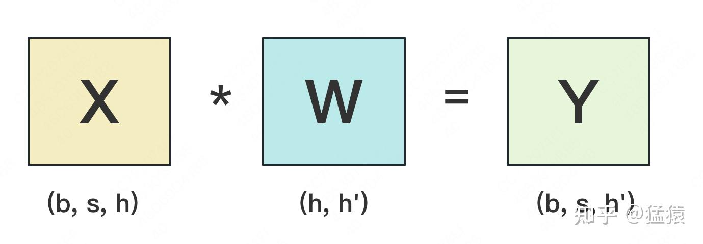
按行切分权重
以两张卡均分输入维度为例，假设 可被 2 整除。将 的上、下两部分分别记为 ，每份形状为 。为了能相乘，也必须把 的特征列切成对应的 ，每份形状为 。
同一个输出元素原本要沿完整的输入维度求和；现在两张卡各算一半加数，所以局部结果需要相加：
每卡的局部结果都是 ，但只包含一部分输入特征的贡献。使用 All-Reduce(SUM) 可以让每张卡得到完整输出 。
接着看反向。 表示最终的标量训练损失，后续层会传回 ，称为上游梯度，形状与 相同。我们要分别求输入梯度以继续传给前一层，以及权重梯度以更新本层参数：
为什么可以各自在本地求梯度。 令 ，则 ，所以 ；同时 不依赖 ，交叉导数为零。可用微分把矩阵链式法则明确写出来：
上面的 表示输入、权重发生微小变化时的增量， 是它们带来的输出变化。用逐元素乘积求和的方式计算损失变化，就是矩阵的 Frobenius 内积；它记作 。将输出变化代入链式法则：
读出各微分项的系数，就得到上面的 与 ；这同时说明了为何另一个输入分片不会额外贡献一项。
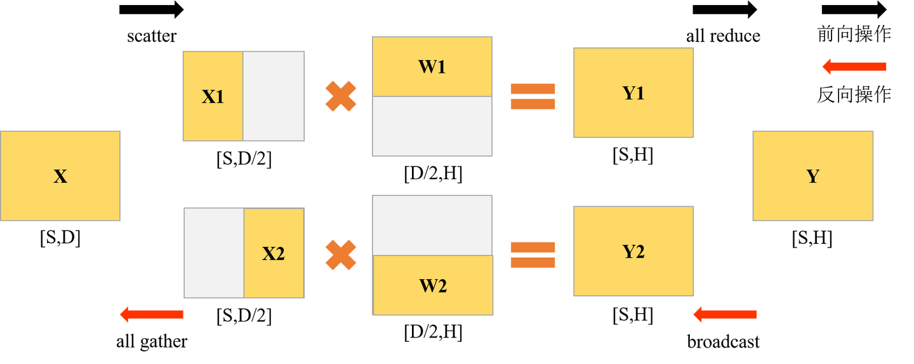
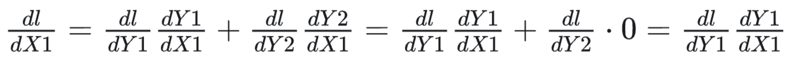
各卡持有 时可独立算局部梯度。 是各 的拼接；只有下游反向算子需要完整梯度时才 All-Gather，配对的列并行层常可直接消费分片。
按列切分权重
现在均分的是输出维度，假设 可被 2 整除。每张卡持有 的一组输出列， 形状为 ；为了算自己的输出列，两张卡都需要完整输入 。各自产生 ，它们表示不同输出特征，所以用拼接组成 ：
输入复制到各卡，输出可以继续保持分片，并非每层后都必须 All-Gather。将上游梯度按输出列分成 ：
按列切分时，两个输出都依赖同一个 X。 先把损失微分按输出分片拆开，再把对共同输入的贡献相加：
同一个输入 沿两条路径影响损失：一条经过 ，一条经过 。链式法则要求把这两条路径的输入梯度贡献相加，因此对 收集系数得到求和梯度。相比之下， 只影响自己的输出分片，权重梯度留在本地。
各卡先算输入梯度的局部贡献，再归约求和；权重梯度保持本地分片。
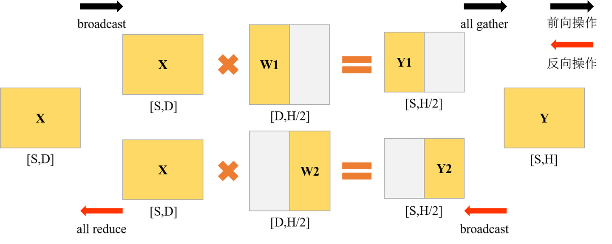
列并行梯度配图（含符号说明）
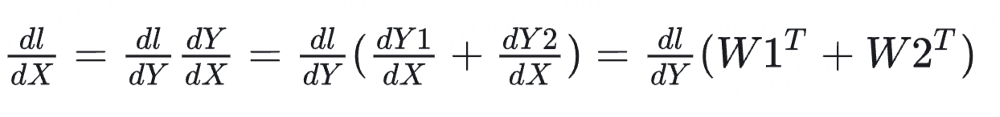
图中的两个输出分片应分别使用 ；输入梯度是各自 的和，不能合并为 。
3. Embedding 与词表并行损失
输入 input_ids 的形状是 ，其中每个整数表示一个 token 在词表中的编号。我们定义词表 embedding 矩阵 ， 是词表大小；第 行 就是编号为 的 token 向量。查表后得到 。
将 按词表行分给不同卡后，每张卡只负责一个 token 编号范围。对同一个输入编号，拥有该行的卡取出向量，其他卡在相同位置填零；这些局部结果 All-Reduce(SUM) 后，便恢复完整的输入 embedding。
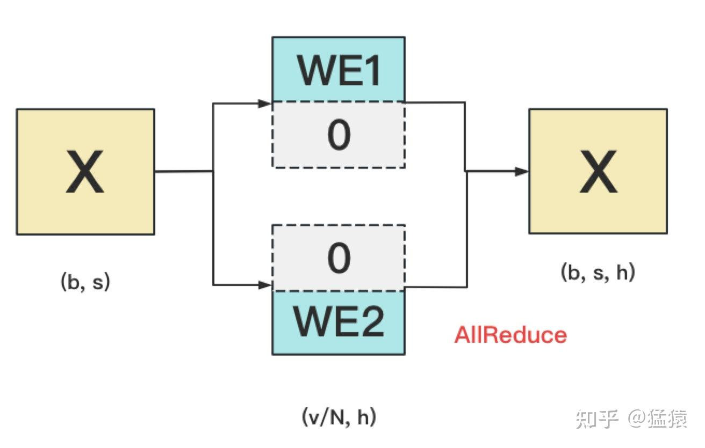
输出头 可以按词表列切分。它可能与输入 embedding 共享，也可能不共享；只有共享时两处梯度才累加到同一参数。
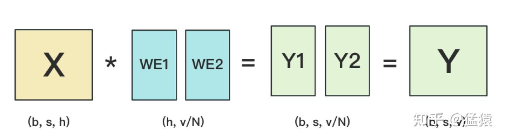
不聚合完整 logits 也能算交叉熵
输出头要给每个候选 token 一个分数。对于一个待预测位置，将词表第 项的未归一化分数记为 logit ，各卡只持有自己的词表子集 。完整 logits 的形状是 ；如果先把它聚到一起再做 softmax，通信量会随大词表增长。
但交叉熵只关心真值 token 的概率。因此先定义全词表最大值 和稳定指数总和 ，它们都是“每个待预测位置一个数”：
这里 是该位置应预测的真值 token 编号， 是模型给它的概率。交叉熵定义为 ：真值概率越大，损失越小。只要从负责该 token 的卡取得 ，便能用共同的 写出损失：
从交叉熵定义展开，才能看清为什么无需完整 logits。
每卡先求本地 max，再 All-Reduce(MAX) 得到 ；计算本地指数和后 All-Reduce(SUM) 得到 ；仅持有真值 token 的卡贡献 ，其余贡献 0，通过归约取回。反向对本地 logits 的梯度为：
其中 表示词表项 是否就是真值：是真值则减 1，否则只保留 。全局标量 已知后，每卡都能形成自己的梯度分片。
需要分别归约最大值、指数和，以及真值 logit 或等价的局部损失；通信张量大小为 ，避免聚合 的完整 logits。不能把实际通信字节数笼统写成 。
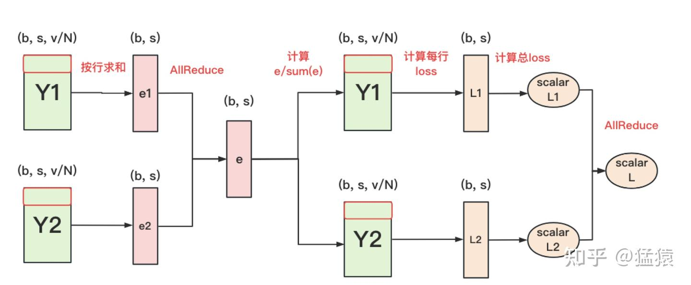
稳定计算时，最大值归约和指数和归约都需要覆盖整个词表。减去共同最大值不会改变 softmax 概率。
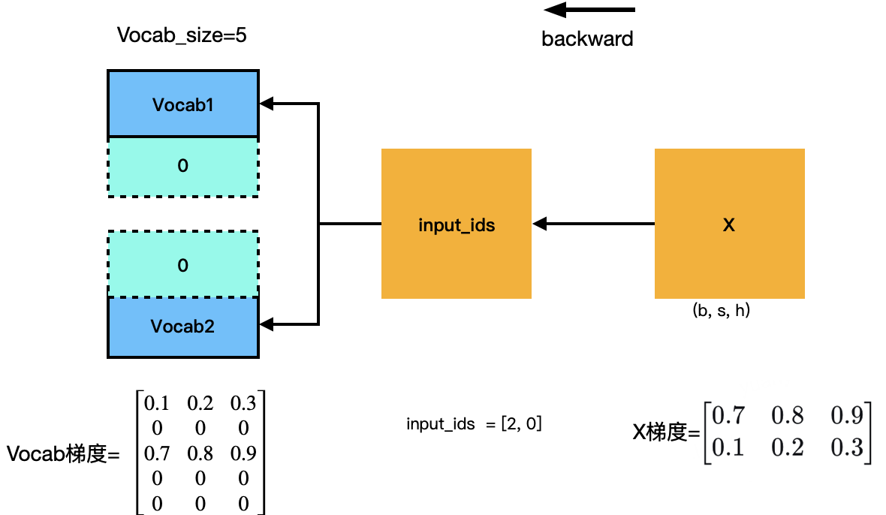
查表操作怎样更新 embedding。 将 batch 和序列位置展平成位置索引 ，token id 为 ，查表结果 。同一个 token 可能出现多次，对应 embedding 行的梯度要累加：
式中的 是某个词表编号，指示函数 在位置 恰好使用该 token 时为 1，否则为 0。因此，只把真正查过第 行的位置梯度累加到 上；同一个词在多个位置出现时，这些贡献都要保留。如果输入 embedding 与输出头共享参数，还要加上输出头路径的梯度。
4. Transformer 中的 TP 配对
Attention 常将 Q/K/V 投影按输出列或头切分，输出投影按输入行切分；各头先独立计算，再通过输出投影归约。GQA/MQA 还需考虑 KV 头数与 TP 组大小的兼容性。
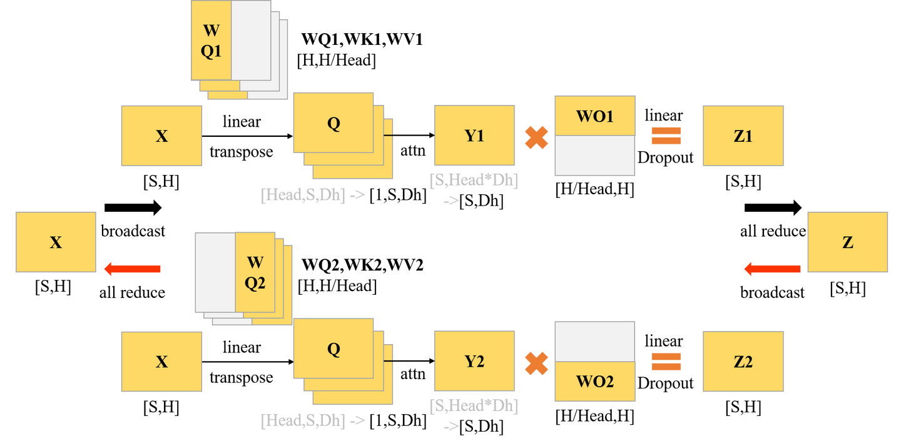
普通两层 MLP 使用“列切第一层 → 局部非线性 → 行切第二层”。SwiGLU 有 gate、up、down 三个投影，前两者配对切分；不能简单描述为“两层线性之间放 SiLU”。
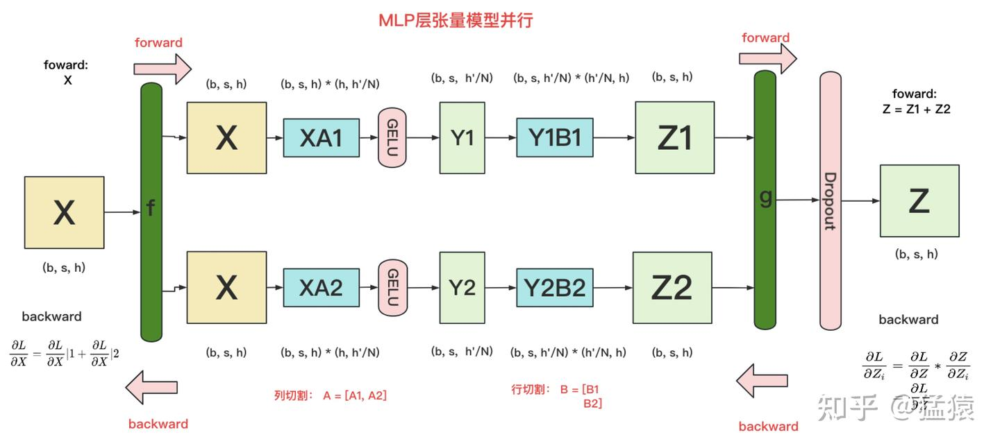
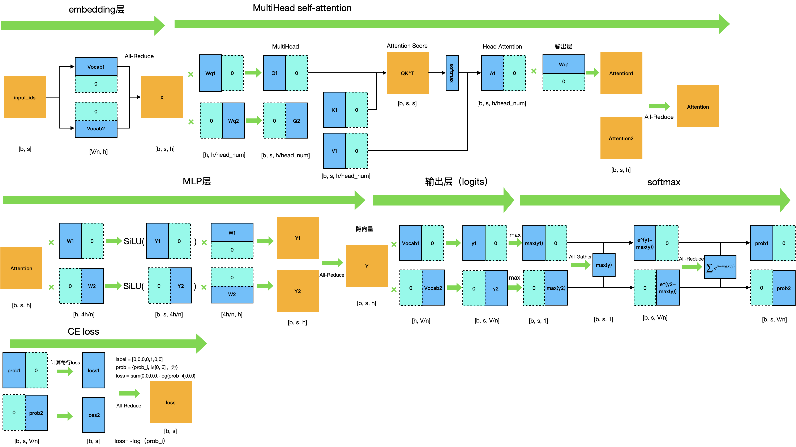
结构图的符号说明
Attention 末尾输出投影应记为 ，图中的 标注容易与 query 投影混淆。MLP 图展示普通两层结构；SwiGLU 需要 gate、up、down 三个投影。
通信量的比较口径
基础 TP、不启用 SP 的典型 Transformer block，一次完整前向和反向约有 4 次 All-Reduce。设 TP 组大小 ，激活每元素 byte，则每 rank 的总发送量近似：
DDP 对该 rank 所持有的参数梯度归约，若参数数目为 、每梯度元素 byte：
真实 block 有多个投影矩阵，不能把参数量一律当成 。TP 通常每 micro-batch、每层都通信，DP 可在梯度累积后同步；比较时还要统一统计周期。不存在无条件的 TP > DP > PP 通信排序。 TP 常放高带宽低延迟的节点内，PP 可跨节点，但应结合实测拓扑决定。
5. PP 与 EP
PP 将模型分为多个阶段，逐阶段传递激活与反向梯度，可以独立使用，也可以与 TP 组合，见流水线并行。
EP 将不同专家放到不同 rank，例如 128 个专家、EP=4 时，每个 rank 可以负责 32 个专家。路由器为每个 token 选择要执行的专家，随后：
- 分发 dispatch：按专家所在 rank 整理 token 表示，发送给对应设备，同时接收其他设备发来的 token。
- 本地专家计算：每个 rank 用自己的专家处理收到的 token。负载是否均衡，取决于路由选中了哪些专家。
- 回收 combine：将专家输出发送回 token 原先所在位置，再按路由权重合并。
- 反向传播：沿相反路径发送梯度；专家计算参数梯度，同时把输入梯度传回上游。同一专家若还有 DP 副本，则还需同步参数梯度。
这些分发、回收常用 All-to-All 或等价通信实现。EP 可以跨节点，效率取决于路由分布、负载均衡和网络，例如 DeepSeek-V3 使用跨节点专家并行。
6. SP 与 CP
Megatron 的常用 SP 将 LayerNorm、dropout 等原本在 TP rank 上重复保存的激活沿序列分片，并与 TP 层的 All-Gather / Reduce-Scatter 配合。它不是“在 Attention 前 All-Gather 所有 KV”的一般定义。
CP 更系统地把长序列激活按上下文分片，各 rank 处理自己的 query，但全局 Attention 仍需访问必要的其他 KV。可通过 ring 点对点传递、All-Gather、All-to-All 或分层组合实现；ring 只是其中一种通信方式。
分块接收 KV 后即可计算，可重叠通信与计算；是否更快取决于块大小、因果负载、拓扑和内核。不能直接断言 SP/CP 通信量恒相同，或一个必然完全阻塞、另一个必然大幅加速。
7. 组合进程组
不含其他并行维度时：
例如 16 卡、TP=2、PP=4，则 DP=2。TP 组处理同一阶段的张量分片，PP 组连接各阶段，DP 组持有相同参数分片但处理不同数据。优化器分片策略与各并行维度是相关但不同的配置，不应写成“开 TP 就不能用 ZeRO-3”。
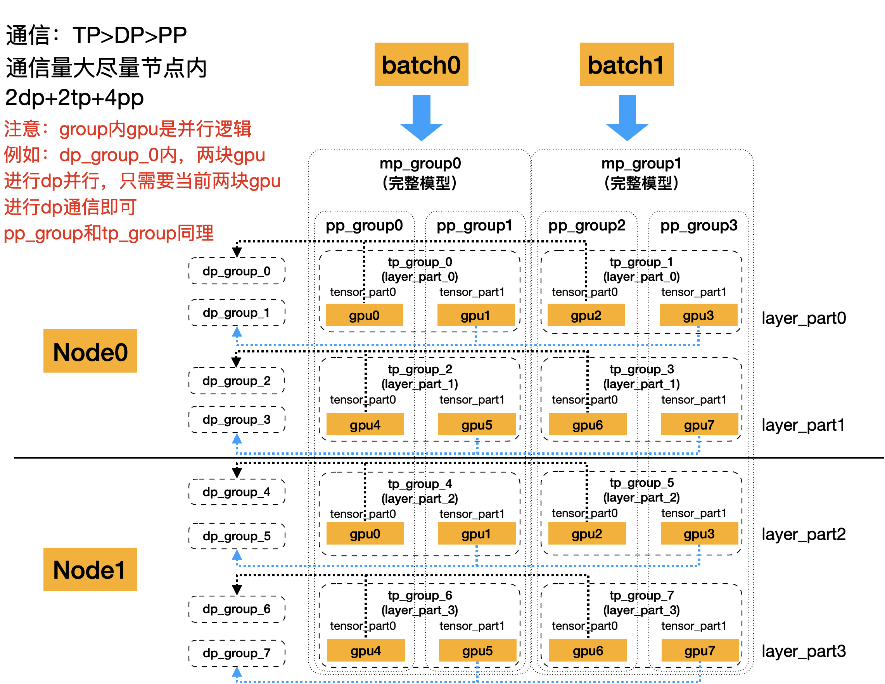
EP 的分组通常与 DP 维度发生重组，专家参数与非专家参数的复制组不同，不能把所有并行度无条件相乘。下图非专家层即使复制同一参数，也在处理 batch0、batch1 等不同数据，不是重复计算同一份数据。
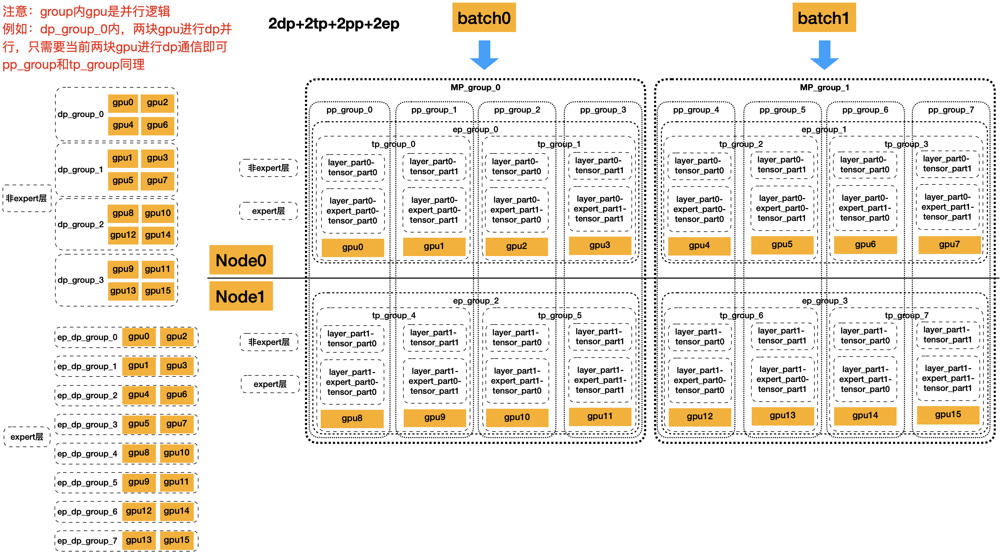